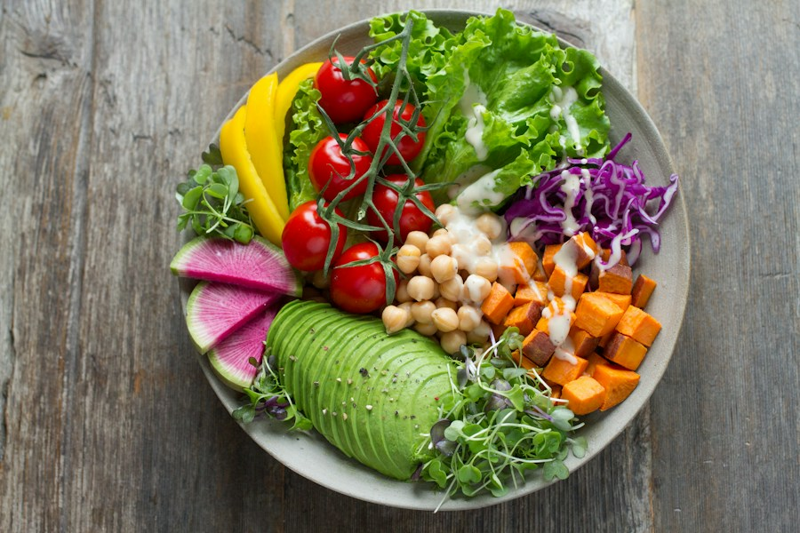

Nutricionista em Natal para Emagrecimento Feminino
Emagrecer não precisa significar viver de restrições ou abandonar os alimentos que fazem parte da sua rotina. Na Mari a Nutri, você encontra acompanhamento nutricional individualizado com a Dra. Mariana Saldanha para emagrecer com mais leveza, estratégia e praticidade, em Tirol, Natal - RN.
Um acompanhamento pensado para a sua rotina, sem julgamentos e sem dietas extremas.
Experiência construída com acompanhamento individualizado.
Avaliação baseada em 62 avaliações reais de perfis locais.
Especializado em emagrecimento e reeducação alimentar.
Acompanhamento pelo WhatsApp e aplicativo próprio.
Nutrição clínica com foco em emagrecimento feminino
A Mari a Nutri, conduzida pela nutricionista clínica Dra. Mariana Saldanha, nasceu para oferecer um jeito mais humano e realista de cuidar da alimentação. Nosso foco é o emagrecimento feminino com acompanhamento individualizado, respeitando a rotina, as preferências e o momento de cada mulher.
Aqui, o objetivo não é entregar mais uma dieta difícil de seguir. É construir estratégias que façam sentido para a sua vida, inclusive com alimentos que fazem parte da cultura e da rotina local, como cuscuz e tapioca.
O atendimento é acolhedor, sem julgamentos e com autoridade clínica para ajudar você a entender melhor o seu corpo, organizar sua alimentação e acompanhar sua evolução ao longo do processo.
Serviços de Nutrição para Emagrecimento em Natal
Cada acompanhamento começa a partir das necessidades e objetivos de cada paciente. Conheça as principais opções da Mari a Nutri.
Consulta de Emagrecimento Feminino
Uma avaliação completa para entender sua rotina, seus objetivos e os fatores que podem estar influenciando o seu processo de emagrecimento.
O acompanhamento inclui avaliação clínica, rastreio metabólico e elaboração de um plano alimentar individualizado.

Programa Emagrecimento Real
Um acompanhamento de 8 semanas para mulheres que desejam mais proximidade e consistência durante o processo de emagrecimento.
O programa inclui consultas quinzenais, avaliação de bioimpedância e suporte comportamental.
Exame de Bioimpedância InBody
Uma análise detalhada da composição corporal para entender a proporção entre massa muscular, gordura corporal e retenção de líquidos.
O exame oferece dados importantes para direcionar o plano alimentar e acompanhar a evolução ao longo do tratamento.
Por que escolher a Dra. Mariana Saldanha?
Na Mari a Nutri, o foco é cuidar de você com respeito à sua história, à sua rotina e aos seus objetivos.
Sem dietas restritivas extremas
O acompanhamento busca uma alimentação sustentável, sem transformar o processo de emagrecimento em uma lista de proibições.
Alimentação que cabe na vida real
Seu plano considera sua rotina e suas preferências, incluindo alimentos que você já consome no dia a dia como cuscuz e tapioca.
Suporte próximo pelo WhatsApp
Você não precisa esperar a próxima consulta para tirar uma dúvida. A Dra. Mariana acompanha você entre os atendimentos.
Aplicativo próprio
Tenha acesso ao seu plano alimentar, lista de compras e receitas em vídeo diretamente no seu celular.
Avaliação da composição corporal
A bioimpedância InBody complementa o acompanhamento com informações detalhadas sobre massa muscular e gordura corporal.
Atendimento acolhedor e sem julgamentos
Um espaço seguro para falar sobre alimentação, rotina, dificuldades e objetivos com tranquilidade e empatia.
Como funciona nosso atendimento?
Navegue pelas etapas para conferir o acompanhamento completo.
Converse com a equipe
Entre em contato pelo WhatsApp e conte um pouco sobre o que você está buscando no seu acompanhamento nutricional com a Dra. Mariana Saldanha.
Agende sua consulta
A equipe orienta você sobre a disponibilidade de horários e o melhor formato para iniciar seu processo de emagrecimento.
Faça sua avaliação clínica
Na consulta, são analisados seus objetivos, rotina, hábitos alimentares, exames e avaliação de bioimpedância InBody.
Receba seu plano individualizado
A estratégia alimentar é construída sob medida para a sua rotina, incluindo alimentos da culinária local como cuscuz e tapioca sem extremismos.
Suporte contínuo & aplicativo
Acesso ao aplicativo próprio com cardápio, lista de compras, receitas e suporte diário direto pelo WhatsApp para tirar dúvidas.
Acompanhe sua evolução
Consultas de retorno e reavaliações periódicas para ajustar o plano, celebrar conquistas e consolidar novos hábitos sustentáveis.
O que dizem as pacientes da Mari a Nutri
Mais de 500 mulheres atendidas com nota 5.0 no Google.
Depoimento real de paciente:
“A Dra. Mariana mudou completamente minha relação com a comida. Consegui emagrecer 8kg sem passar fome e sem cortar meu cuscuz matinal!”
Depoimento real de paciente:
“O Programa de 8 semanas foi um divisor de águas. O suporte diário pelo WhatsApp e o aplicativo facilitam muito a rotina corrida.”
Depoimento real de paciente:
“O exame de bioimpedância InBody me ajudou a entender de verdade a minha composição corporal. Atendimento acolhedor e sem julgamentos!”
Nutricionista para emagrecimento em Natal - RN
Consultório no Edifício Tirol Corporate, com fácil acesso para:
Tirol
Localização no Tirol Corporate
Petrópolis
A 5 minutos do consultório
Lagoa Nova
Acesso rápido pela Av. Hermes
Capim Macio
Fácil deslocamento pela zona sul
Perguntas Frequentes
Contato & Localização
Edifício Tirol Corporate, Sala 405 – Tirol, Natal - RN.
Endereço
Avenida Hermes da Fonseca, 1200, Edifício Tirol Corporate, Sala 405 – Tirol, Natal - RN, CEP 59020-000
Telefone Fixo
+55 (84) 3222-0000WhatsApp Oficial
+55 (84) 99999-0000Horário
Segunda a Sexta: 08h00 às 19h00 | Sábados: 08h00 às 12h00